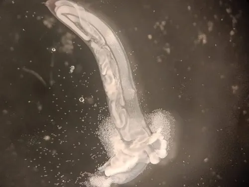

其他无脊椎动物 · 动物界
十二指肠钩口线虫 Ancylostoma duodenale

俗称钩虫的肠道寄生虫，感染性幼虫经皮肤钻入人体，成虫吸食肠壁血液，可导致严重贫血，需注意防护。
- 分类
- 门线虫动物门纲色矛纲目圆线目科钩口科属钩口属
- 栖息环境
- 成虫寄生在人体小肠，幼虫在温暖潮湿的土壤中发育
- 地理分布
- 全球分布，热带和亚热带农村地区较常见
- 保护级别
- 暂无评估；重要肠道寄生虫
物种志
十二指肠钩口线虫成虫体形细小，长约 1 cm 左右，呈灰白或淡红色，头部有口囊，口囊内有一对钩状牙齿，因此称钩口线虫。它寄生在人体小肠内，用口囊咬住肠壁，吸食血液和组织液。
它的虫卵随粪便排出，在温暖潮湿的土壤中孵出幼虫，幼虫发育为感染性丝状蚴后，可钻入人体皮肤感染，常引起皮肤瘙痒和皮疹；幼虫经血液移行到肺部，再经气管、咽部进入消化道，发育为成虫。成虫吸血可导致缺铁性贫血、乏力、面色苍白，儿童感染还会影响生长发育。钩虫病在卫生条件较差的农村地区较常见。预防的关键是粪便无害化处理、不赤脚下田、劳动时穿鞋戴手套、饭前便后洗手，感染者应及时就医驱虫并补充营养。
形态与习性
- 食性用口囊咬住肠壁，吸食血液和组织液
- 体长成虫约 1 cm 左右
- 感染途径感染性幼虫钻入皮肤
- 危害慢性失血导致缺铁性贫血和乏力
- 预防粪便无害化处理、不赤脚下田、穿鞋戴手套
- 治疗及时就医驱虫，并补充铁和营养
趣味知识
- 钩虫的幼虫能直接从皮肤钻入人体，所以下田时不要赤脚。
- 成虫咬住肠壁吸血，长期感染会导致缺铁性贫血。
- 粪便无害化处理和农作时穿鞋戴手套，能有效预防钩虫感染。